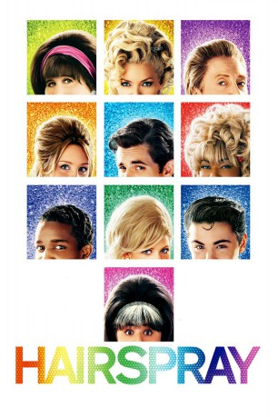
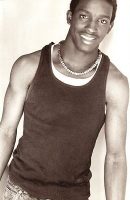
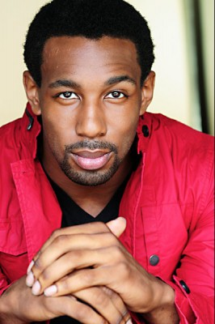

#1479 Hairspray
 
 IMDB-Wertung: 6.7 / 10
IMDB-Wertung: 6.7 / 10  Metascore: 81
Metascore: 81 
Die hübsche Amber von Tussle hat ein Problem, und das hat einen Namen: Tracy Turnblad. Beide wollen eine Rolle in der momentan angesagtesten Fernsehserie ergattern, und ausgerechnet die pummelige Tracy scheint der schlanken, hübschen Amber diese vor der Nase wegschnappen zu können. Einen Haken hat die Sache aber, denn Tracys Mutter will eigentlich gar nicht, daß ihre Tochter eine Karriere im Showbiz startet.
Jahr: 2007
Dauer: 117 Minuten
FSK: 0
Land: USA Studio: New Line CinemaTonspuren: DTS - ,
Untertitel:
Auflösung: 1080p (1920x816) Größe: 10240 MB
Genre: Komödie, Musical, Liebe
Regisseur: Adam Shankman
Drehbuch: Leslie Dixon, John Waters, Mark O'Donnell, Thomas Meehan
Soundtrack: Marc Shaiman
Darsteller:
 John Travolta als Edna Turnblad
John Travolta als Edna Turnblad Michelle Pfeiffer als Velma Von Tussle
Michelle Pfeiffer als Velma Von Tussle Christopher Walken als Wilbur Turnblad
Christopher Walken als Wilbur Turnblad Amanda Bynes als Penny Pingleton
Amanda Bynes als Penny Pingleton James Marsden als Corny Collins
James Marsden als Corny Collins Queen Latifah als Motormouth Maybelle
Queen Latifah als Motormouth Maybelle Brittany Snow als Amber Von Tussle
Brittany Snow als Amber Von Tussle Zac Efron als Link Larkin
Zac Efron als Link Larkin-  Elijah Kelley als Seaweed
 Allison Janney als Prudy Pingleton
Allison Janney als Prudy Pingleton- Nikki Blonsky als Tracy Turnblad
 Jayne Eastwood als Miss Wimsey
Jayne Eastwood als Miss Wimsey Paul Dooley als Mr. Spritzer
Paul Dooley als Mr. Spritzer Jerry Stiller als Mr. Pinky
Jerry Stiller als Mr. Pinky John Waters als Flasher
John Waters als Flasher Nick Loren als Cop Nick
Nick Loren als Cop Nick- Neil Crone als Cop at Protest
- Brendan Wall als Male Cop on TV
 Ted Ludzik als Police Sergeant at Protest
Ted Ludzik als Police Sergeant at Protest- Geri Hall als Good Morning Baltimore Hostess
 Ricki Lake als Talent Agent
Ricki Lake als Talent Agent Adam Shankman als Talent Agent
Adam Shankman als Talent Agent Marc Shaiman als Talent Agent
Marc Shaiman als Talent Agent- Scott Wittman als Talent Agent
 Anne Fletcher als Nurse
Anne Fletcher als Nurse Zachary Woodlee als Smoking Teacher
Zachary Woodlee als Smoking Teacher- Becca Sweitzer als Darla - Corny Collins Council
- Cassie Silva als Brenda - Corny Collins Council
- Tiffany Engen als Noreen - Corny Collins Council
- Sarah Jayne Jensen als Shelley - Corny Collins Council
- Nick Baga als Sketch - Corny Collins Council
- Curtis Holbrook als Brad - Corny Collins Council
- Spencer Liff als Mikey - Corny Collins Council
- Phillip Spaeth als Fender - Corny Collins Council
- Tabitha Lupien als Becky - Corny Collins Council
- Sherisse Springer als Maybelle's Store Dancer
 Jamal Sims als Maybelle's Store Dancer
Jamal Sims als Maybelle's Store Dancer-  Stephen Boss als Maybelle's Store Dancer
 Tanee McCall als Dynamites
Tanee McCall als Dynamites Nadine Ellis als Dynamites
Nadine Ellis als Dynamites- Khetanya Henderson als Record Hop Dancer
- Alison Smyth als Auditionee
- Emily Andrews als Auditionee
- Julianne Jackson als Auditionee
- Tiffany Green als Mr. Pinky's Customer
- Sharron Matthews als Mr. Pinky's Cashier
- Melissa Williams als Welcome to the 60's Dancer
- Sheri Godfrey als Welcome to the 60's Dancer
- Romina D'Ugo als Welcome to the 60's Dancer
- Julia Juhas als Welcome to the 60's Dancer
Datei: X:\2007(G-M)\Hairspray (2007, FSKo.Al., 1920x816).mkv seit 09.07.2015
Festplatte: HD 2007(A-Z)-2008(A-F)
 Es gibt insgesamt 64 Filme in der Gruppe '2007(G-M)'
Es gibt insgesamt 64 Filme in der Gruppe '2007(G-M)'